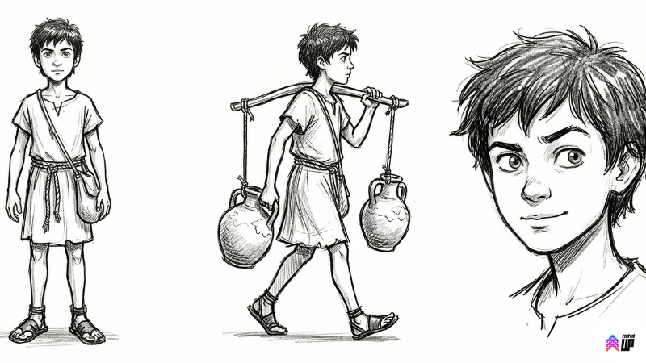
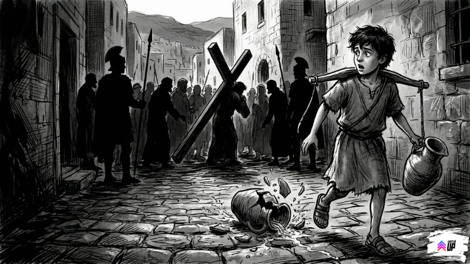

Este devocional abre em breve!
Este devocional abre em breve!

A história começa num dia comum. Mas nenhum dia em Jerusalém era realmente comum.
Levi acordou às cinco da manhã. Como sempre.
Não porque gostasse. Porque a água não ia carregar sozinha.
Ele tinha doze anos, duas jarras de barro, um par de sandálias quase sem sola e uma rota memorizada de cabeça: poço de Siloé, rua do mercado, virar na esquina do oleiro, subir a ladeira do Templo, não esbarrar nos guardas romanos. Dez entregas por manhã. Dezesseis moedas no bolso ao meio-dia. Repete amanhã.
Naquele dia, porém, Jerusalém estava diferente.
Havia mais gente do que o normal nas ruas. Muito mais. Peregrinos de todo lugar, chegando para a festa da Páscoa. Levi odiava época de festa, todo mundo com pressa, ninguém desviando do caminho, e ele ali com duas jarras cheias tentando não derrubar nada.
Foi quando ouviu o barulho.
Um barulho diferente. Não de festa. De tensão.
Gritos. Choro. Soldados romanos. E uma multidão toda acompanhando algo, ou alguém, pelo caminho.
Mas os pés foram mais rápidos que o bom senso.
Ele se espremeu entre as pessoas, equilibrando as jarras nos ombros, tentando ver o que estava acontecendo. E então viu.
Um homem carregando uma cruz de madeira pesada. O rosto machucado. Uma coroa de espinhos. Roupas rasgadas. Mas tinha algo nos olhos daquele homem que Levi não conseguia descrever. Não era desespero. Não era raiva. Era outra coisa.
Como se ele soubesse exatamente o que estava fazendo.
Levi ficou parado tanto tempo que uma das jarras escorregou do ombro e quebrou no chão. Água por todo lado. Dezesseis moedas a menos.
Ele nem notou.

Mais tarde, já no fim da tarde, Levi tentou descobrir quem era aquele homem.
Perguntou pro vizinho. O vizinho encolheu os ombros. Perguntou pra senhora da tenda de especiarias. Ela disse só "Jesus" e fechou a janela rapidinho, como quem não quer se meter.
Jesus. Só isso. Nem sobrenome, nem explicação.
Mas o que Levi não conseguia tirar da cabeça não era o nome.
Era aquele olhar.
Ele voltou pra casa com uma jarra a menos, dezesseis moedas a menos, e uma pergunta que não saía da cabeça.
Uma pergunta irritante, daquelas que a gente tenta ignorar mas que ficam voltando toda hora como aquela música que entra na cabeça sem ser convidada.
Por que alguém olha assim quando está morrendo?
Central UP — IEQ Central Londrina
Desenvolvido por Pr. Eduardo